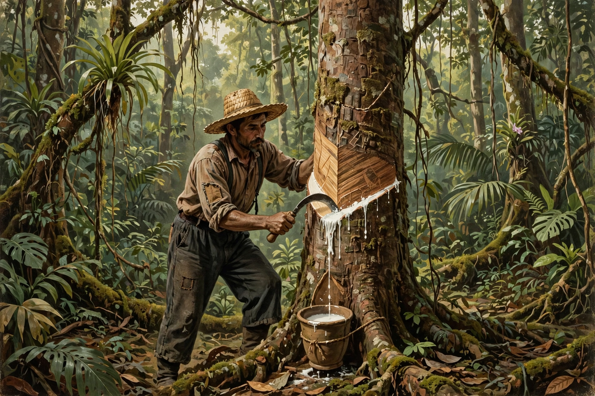

Amazon rubber cycle
| Amazon rubber cycle | |
|---|---|
 | |
| A seringueiro (rubber tapper) collecting latex | |
| Period | c. 1879–1912 (first cycle); 1942–1945 (second cycle) |
| Region | Amazon Basin — Brazil, Peru, Bolivia |
| Key cities | Manaus; Belém; Iquitos |
The Amazon rubber cycle was an important period in the economic and social history of the Amazon region in Brazil and neighbouring countries, centred on the extraction and commercialisation of latex from the rubber tree Hevea brasiliensis. The boom transformed Amazonian cities such as Manaus and Belém, which grew wealthy on rubber exports to the industrialising United States and Europe, where demand surged with the bicycle and then the automobile.
Boom and society
At its height around the turn of the twentieth century, wild rubber accounted for a large share of Brazil's export earnings. Manaus acquired electric lighting, tramways and the opulent Amazonas Opera House (Teatro Amazonas, opened 1896). The system relied on debt peonage: tappers (seringueiros), many of them migrants from drought-stricken north-eastern Brazil, were bound to trading posts by debt under the aviamento system. In the Putumayo region of Peru, the rubber company of Julio César Arana was exposed for atrocities against Indigenous peoples, documented in the reports of Roger Casement.
Collapse and second cycle
The boom collapsed after 1912, when rubber seeds taken from Brazil decades earlier — famously by Henry Wickham in 1876 — matured into vast, efficiently managed plantations in British Malaya and the Dutch East Indies, which undercut wild Amazonian rubber on price. A brief second cycle during the Second World War, when Allied demand revived after Japanese occupation of Asian plantations, brought thousands of "rubber soldiers" to the Amazon but ended with the return of peace and the rise of synthetic rubber.